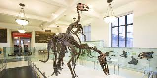
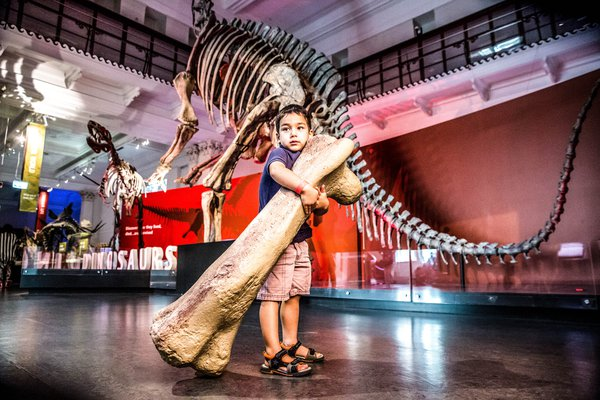
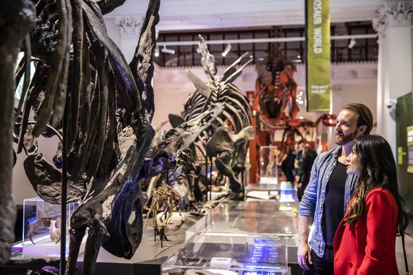
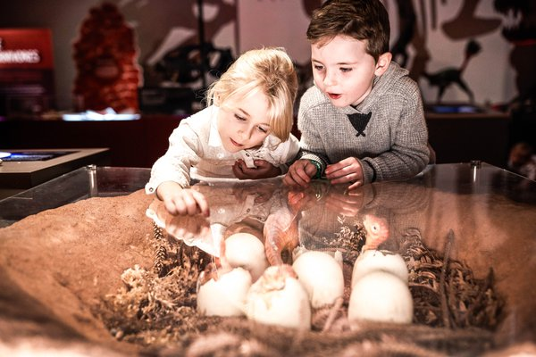
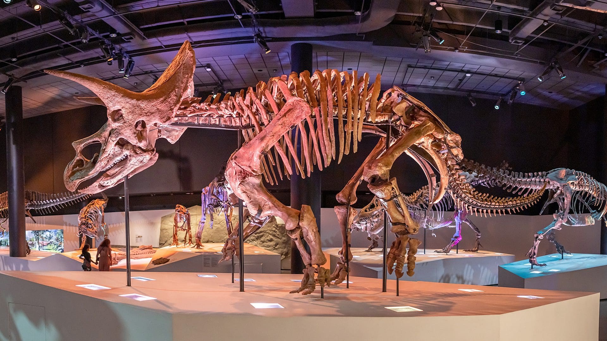
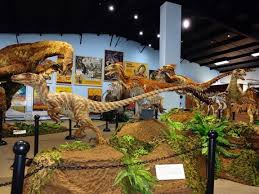

Paleontologists are like detectives who examine the evidence that extinct animals left behind. Those clues to what dinosaurs were like are found in fossils—the ancient remains of an organism, such as teeth, bone, or shell—or evidence of animal activity, such as footprints and trackways.
Everything we know about non-avian dinosaurs is based on fossils, which include bones, teeth, footprints, tracks, eggs, and skin impressions. For centuries, people throughout the world have discovered amazing fossilized bones and footprints. Early finds inspired legends and fairy tales, as people imagined that these bones belonged to giants or huge monsters.
Some consider Barnum Brown, who began his career at the American Museum of Natural History in 1897, to be one of the greatest dinosaur hunters of the late 19th and early 20th centuries. He began his career at the American Museum of Natural History in 1897. Many of his greatest discoveries, including the first specimens of Tyrannosaurus rex ever found, are on display in the Museum’s dinosaur halls.
Today, in addition to patience and sharp observation skills, paleontologists employ new technologies to solve unanswered questions about dinosaurs and other fossils. Advanced imaging technology, such as CT scans, allow paleontologists to see the three-dimensional structure of fossils, often without having to remove the matrix.
Paleontologists incorporate the research of biomechanics, applying the principles of both physics and engineering to reconstruct the biological movement of non-avian dinosaurs. The information gleaned from fossil bones along with observations of both the movement and the musculature of living animal species help scientists model how non-avian dinosaurs may have moved.
| Subject | Day and Time | Lecturer | |
|---|---|---|---|
| Dinosaur Facts | Monday | 10:00 AM | Dr. Emily Thompson |
| Paleontology | Tuesday | 10:00 AM | Dr. Jane Smith |
| Wednesday | 10:00 AM | Dr. Michael Johnson | |
|  |  |  |
|  |  |  |